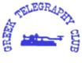

GTC: Greek Telegraphy Club
The letter below was distributed in the CW community in order to introduce this club.
ORIGINAL LETTER:
G R E E K C W C L U B
(SV-CW-C) (Since 1998)
a EUCW member
HELLINIKI LESHI TILEGRAFIAS
---------------------------
** OBJECTIVES STATUTES and RULES **
Athens, November 3rd 1998
Dear Morse Code friends World Wide ...
The Greek Telegraphy Club was formed in October 1998, as an
independent Hellenic club, and wants to accomplish:
To further the use of Morse Code on the ham radio bands,to encourage
newcomers to the CW mode,and to foster and maintain friendship among
radio telegraphers.
GTC is also a strong influence against efforts to eradicate CW as a
mode of radio amateur communications.
Before to make any decision to form up, a CW club in our country,we
were watching for years actions of similar aiming groups and organi
zations in Europe and elsewhere, and finally we did it, in order to
support and share the common effort for the promotion, protection,
and defence of Morse Code, especially under the current conditions.
Here in SV-land, the majority of hams is still far away from
thoughts about the non use of code during the ham exams, but as
times change rapidly,we wish to make ourselves strong enough to
fight against any present and future threat of our beloved CW code.
Beside Greece even a small country, has a very large number of well
experienced CW operators, who they have been for years at sea as
wireless officers,serving merchant navy, which still remain one
of the biggest fleets in the world even to our days.
Today many of them are radio amateurs, and act as CW operators
on the ham bands, hitting the airwaves, having great fun while
work on their favorit mode.
Fortunately for us, there is also a large number of young newcomers,
who feel in love with morse code. We consider, this is a very deep
duty for all us the olders, to keep this people in a continue touch
with CW, as the fundamendal thing in the world of Amateur Radio.
In a meeting we have had some days ago,we discussed about some
issues regarding to awards, contests, web site building, etc,and
now we're in position to say that soon, many of these topics will
find a good way.
At the present time, as a new "sister club", we will be too close
in events which become from the EUCW Clubs, (i.e. contests etc),
doing our best for the success of all those happenings.
We also desire to establish good relations including a honest and
open collaboration, and close links, between GTC (SV-CW-C), and
major EU CW groups as, Deutscher Telegraphy Club e.V (DL-CW-C),
Activity Group Telegrafie e.V. (AGCW-DL), FISTS, Union Francaise
Telegrafie (UFT),Italian Telegraphy Club and others, wishing to
enhance and push forward,common promotion of our aims.
GTC represents the interests of Morse Telegraphy in Greece,via
its cooperation with RAAG, (Radio Amateur Assn of Greece),
and all other already existing, smaller SV clubs too.
Our Club profile is very simple. We're an independent organization,
which promotes exclusively the CW interests in the Amateur Radio
Radio Service.
We accept Greek radio amateurs who they like to join,and for that,
their word of honour that they agree with our statutes and aims,
is enough for us.
GTC recognizes that there are many whose interests on this state
of art mode,are just as deep, and invite them to inquire about
their membership into the club forces.
The same exactly is in issue for foreign people who like to enter.
No any fee is required for the foreigners. Membership is completely
free of any charge.
The officers of the club are all the founding members, a number
which consists of twenty two people. However, for most flexible
operation of the club, an executive council is in progress.
73, de Yorgos SV1NA (on behalf of executive council GTC)
sv1na (at) hotmail.com
SV - CW - CLUB Members
001 SV1LV Castor, 002 SV1COM Oddy, 003 SV1DU George, 004 SV1NA Yiorgos, 005 SV1MF Markos, 006 SV1VJ Yianni, 007 SV1KU Giorgi, 008 SV1IW Manos, 009 SV8IM Mike, 010 SV8ZS Nick, 011 SV1JG Cliff, 012 SV1JA Vassili, 013 SV1NN Takis, 014 SV1BUU Menios, 015 SV1TP Dimos, 016 SV1SQ Mike, 017 SV1ME Manos, 018 SV1AGZ Stratos, 019 SV1TU Nikolas, 020 SV1JO Thanos, 021 SV1ENG Tony, 022 SV1SB Milton, 023 SV1EMY John, 024 SV2CUI George, 025 SV1UG Nassos, 026 SV1AOW Giorgos, 027 SV1JB Demetre, 028 SV1DKL Stathis, 029 SV1RP George, 030 SV8BEU Antonis, 031 SV1END Dimitris, 032 SV1CEI Nickos, 033 SV1COD Manos, 034 SV1EDY Toly, 035 SV1BKE Manos, 036 SV1CDP Stephan, 037 SV5ADF George, 038 SV1AGL John, 039 SV1ENI Kostas, 040 SV1DET John, 041 SV1AMH Jim, 042 SV1DLS Costas, 043 SV1IG Tassos, 044 SV1AYA Stephan, 045 SV1DOJ Tassos, 046 SV7TL Takis, 047 SV1AJS George, 048 SV1IS Nickolas, 049 SV1HK Theodor, 050 SV1UY Demetre, 051 PA3DSM Henk, 052 SV8BHN Stelios, 053 SV1DKR John, 054 DL5XL Felix, 055 DL5QE Martin, 056 K2RSK Peter, 057 DL4NBE Leo, 058 SV1BJW Bill, 059 SV1AOZ Manolis, 060 SV1QN George, 061 SV1EFP Stavros, 062 SV2AVP Theodor, 063 HB9EBC Michael, 064 SV8BGW George, 065 DJ8EF Ferenc, 066 DK1EAW Bjoern, 067 SV8CS Spyros, 068 SV9ADH Philip, 069 SV9BAI John, 070 DL3SZ Adolf, 071 DL3CT Hans, 072 LZ1JZ Anton, 073 DL8KAZ Dieter, 074 DH9DP Dennis, 075 DL1ARG Rolf, 076 DL1YDL Frank, 077 I6HWD Domenico, 078 DL1LAW Hans, 079 DL6LBA Anny, 080 DD7LI Helmut, 081 9A3FO Mladen, 082 DL2FDF Yiorgos / SV0IR, 083 DJ4AR Georg, 084 DL1IU Fritz, 085 DL4FBI Helmut, 086 SV1AFW Elias, 087 SV2BBJ Nickos, 088 SV2BBK Theofanis, 089 SV1BUV Nikos, 090 SV1AIP John, 091 SV1AEU Mike, 092 SV2BOH Elias, 093 SV7APD Kostas, 094 F5OQO Jean-Michel, 095 DH3MG Martin, 096 SV1DOO Nikos, 097 DL5YYM Guenter, 098 DL3HWO Herbert, 099 JH2QFI Masa, 100 SV1ACL John, 101 HB9DMH Gregor, 102 9A5I Ivan, 103 DL4CF Joerg, 104 DG6YFY Thomas, 105 SV1TM Kostas, 106 IK7XTE Mario, 107 SV3GLS Rania, 108 SV2UF Leftheris, 109 SV1ALP Panos, 110 SV1GAM Dimitris, 111 SV1ELW Nickos, 112 SV1EMZ George, 113 SV4RO Sotiris, 114 SV8CRI Panos, 115 DL1ATR Stefan, 116 SV1EHD Sifis, 117 F5NQL Maurice,